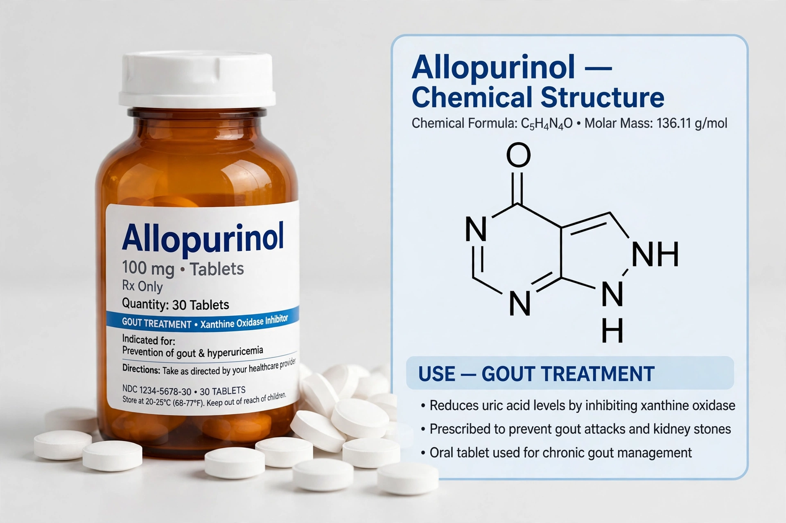

Allopurinol is a medication used to decrease high blood uric acid levels, principally to prevent gout, kidney stones due to uric acid, and tumour lysis syndrome. It is on the WHO List of Essential Medicines.

Allopurinol inhibits xanthine oxidase, reducing production of uric acid. It is used for chronic gout, hyperuricaemia in chemotherapy, and recurrent uric acid kidney stones.
Common effects include rash and upset stomach. Rare but serious reactions include Stevens–Johnson syndrome and toxic epidermal necrolysis, with higher risk in carriers of HLA-B*58:01, more common in some Asian and African populations. It interacts with azathioprine and mercaptopurine.
It was synthesised in the 1950s by Roland K. Robins and developed at Burroughs Wellcome by Gertrude Elion and George Hitchings, whose work on purine analogues won the 1988 Nobel Prize in Physiology or Medicine. It was approved in the United States in 1966.